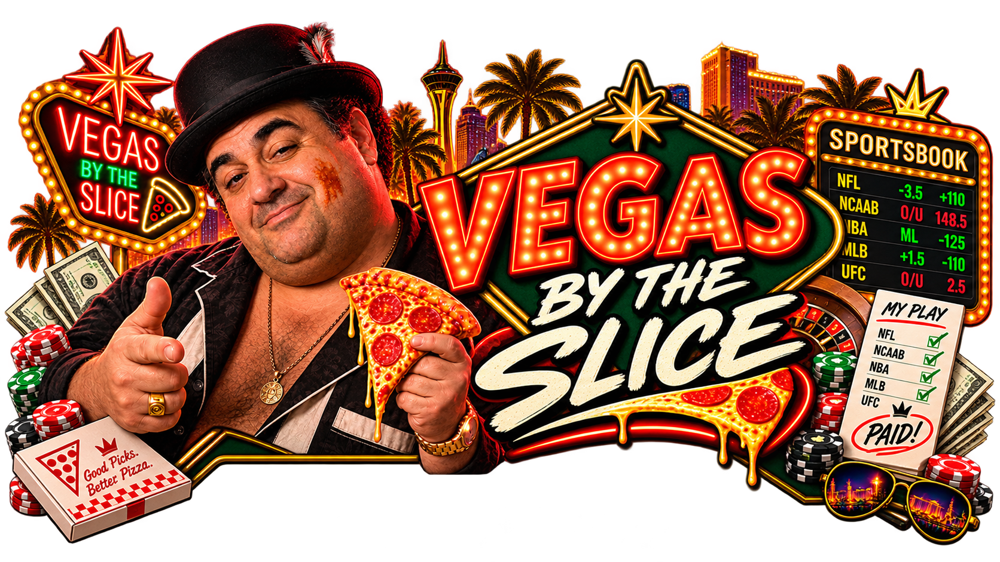
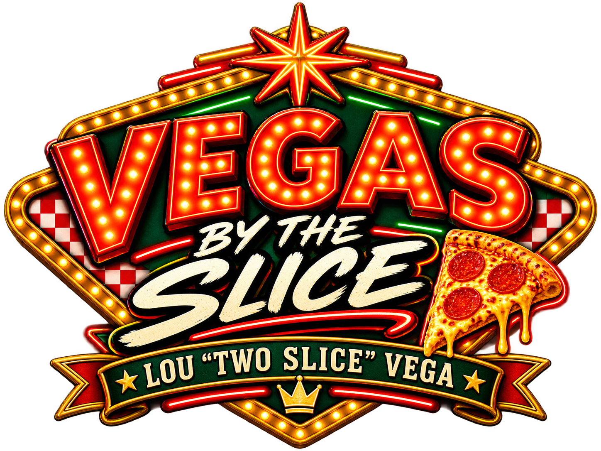

VEGAS BY THE SLICE v3
Full-day close: the morning prop board got priced out, the afternoon opened a few files, and the late window finally leaves exactly two things on Lou's clipboard — Baltimore as a LEAN and Toronto as a WAIT. No BET means no pretending the casino owes us a ticket.
FEED 18:09 PT
ISSUED 18:16 PT
0 BET · 1 LEAN · 1 WAIT · 5 PASS · $0
SLICE BOARD: BALTIMORE WATCH · TORONTO WAIT
Stewart RBI was the one live morning file.
The morning price tightened; the board shut down.
One file reopened, but nothing became a ticket.
Pittsburgh led a broader afternoon watch board.
Baltimore and Toronto are the only live late files.
LATE SPORTS MENU
Brandon Young's 3.50 ERA is materially stronger than Jacob Lopez's 4.98, and both orders are posted. But Gunnar Henderson rests, Pete Alonso is managing a calf issue, and the current −110 still misses the conservative −105 gate.
Toronto stayed within 10 in the recent meeting and Las Vegas lost NaLyssa Smith for the season, but Toronto is badly depleted and Wilson's final status is still material. Extreme-tail uncertainty keeps this a WAIT.
Arizona has the better season, but Kohl Drake's 8.75 xERA versus Blade Tidwell's stronger current line makes laying a favorite price the wrong side of the counter.
Home court gives Los Angeles a path, but Washington is 24–15 with three straight road wins. +180 is nowhere near the +240 gate.
The price improved eight cents from 15:15, but Reid Detmers' 3.62 ERA and one run allowed over his last 20 innings still dominate Andrew Painter's 6.04 ERA.
Pumas has reported absences and Tijuana owns home field, but +105 is near fair, the XIs are not confirmed and there is no second fresh supported quote.
Monterrey's prior-round rotation work is real, but Tijuana is rested at home, the comparison quote is stale and both starters remain unresolved. Thin market, thin edge, easy pass.
LOU'S SLICE LEDGER
Floor rule: A source LEAN stays a LEAN. A WAIT stays a WAIT. Lou can circle a counter price, but he does not manufacture a VigScope BET.